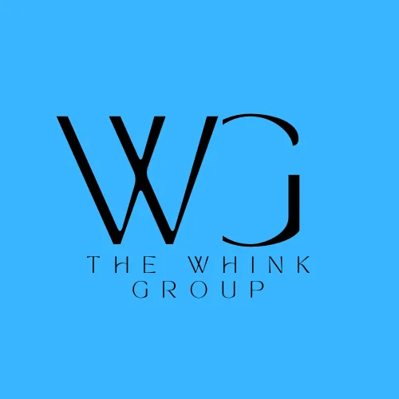
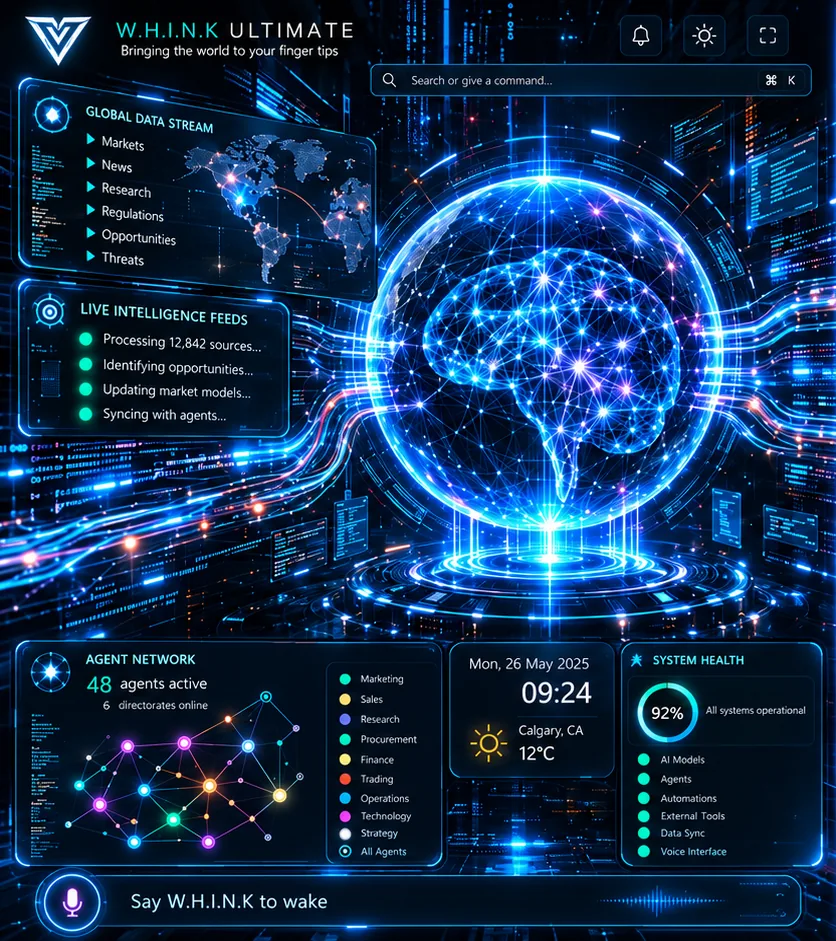

See the wider world.
A vision for bringing news, research, and market information into a connected view.
THE WHINK GROUP
A home for ambitious ideas.
A foundation for what comes next.

A SHARED VISION. A WORLD OF POSSIBILITY.OUR WORLD
Whink Group brings our companies and products together under one shared ambition: turning thoughtful ideas into useful experiences.
Our five subsidiaries bring together consulting, real estate, trading, technology, and construction and procurement.
Where ideas become digital experiences.
Explore the companyA WHINK GROUP COMPANY
Application development, AI, robotics, and technology
that advances the way the world works.
OUR PRODUCT
An ambitious vision for a connected AI command center.
Whink Ultimate explores a single space for information, intelligence, and the tools that help you move forward.
Explore Whink Ultimate
WHINK APPS / PRODUCT CONCEPT
Discover the thinking behind Whink Ultimate and take a closer look at the product vision.
Discover the conceptWHINK GROUP / WHINK APPS / WHINK ULTIMATE
Introducing the vision for Whink Ultimate:
a connected AI command center.
PRODUCT CONCEPT · BY WHINK APPS
THE PRODUCT VISION
A place to bring the bigger picture into focus.
The Whink Ultimate concept explores how global information, AI agents, and everyday interactions could come together in one environment.
A vision for bringing news, research, and market information into a connected view.
Exploring how AI agents could help organize information across different areas of work.
A concept centered on clear navigation, search, and voice-led interaction.
The visuals show the Whink Ultimate product concept. Features, availability, and launch details will be shared as the product develops.
More about Whink Apps